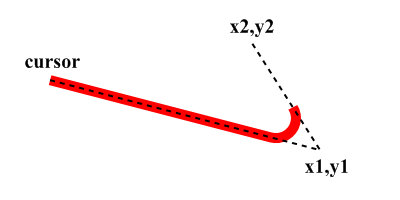
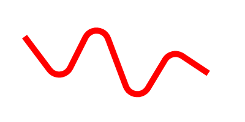

AddPathArc()
语法
AddPathArc(x1.d, y1.d, x2.d, y2.d, Radius.d, [, Flags])概要
Adds a straight line towards (x1, y2) followed by an arc in the direction of (x2, y2) to the vector drawing path. This function can be used to create paths with rounded corners. The new cursor position will be the endpoint of the arc.
参数
x1.d, y1.d The target position for the straight line. x2.d, y2.d The target position to indicate the direction of the arc. Radius.d The radius for the rounded corner. Flags (optional) Can be one of the following values: #PB_Path_Default : The positions are absolute (default) #PB_Path_Relative: The positions are relative to the last cursor position.
返回值
无.
备注
The following image illustrates the meaning of the two reference points and the the segments that are added to the path. Note that no second straight line is added towards the (x2, y2) point by the command. This makes it possible to use AddPathArc() again to add a further rounded corner also at the (x2, y2) position.
示例
If OpenWindow(0, 0, 0, 400, 200, "VectorDrawing", #PB_Window_SystemMenu | #PB_Window_ScreenCentered) CanvasGadget(0, 0, 0, 400, 200) If StartVectorDrawing(CanvasVectorOutput(0)) MovePathCursor(40, 60) AddPathArc(100, 140, 160, 20, 20) AddPathArc(160, 20, 220, 180, 20) AddPathArc(220, 180, 280, 80, 20) AddPathArc(280, 80, 340, 120, 20) AddPathLine(340, 120) VectorSourceColor(RGBA(255, 0, 0, 255)) StrokePath(10) StopVectorDrawing() EndIf Repeat Event = WaitWindowEvent() Until Event = #PB_Event_CloseWindow EndIf

参阅
MovePathCursor(), AddPathLine(), AddPathCurve(), AddPathCircle(), AddPathEllipse(), AddPathBox()
已支持操作系统
所有